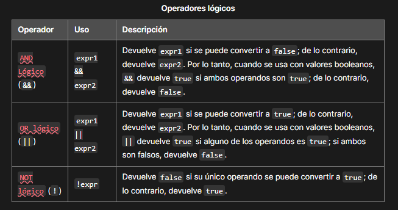

JavaScript (JS) es un lenguaje de programación ligero, interpretado, o compilado justo-a-tiempo (just-in-time) con funciones de primera clase. Si bien es más conocido como un lenguaje de scripting (secuencias de comandos) para páginas web, y es usado en muchos entornos fuera del navegador, tal como Node.JavaScript es un lenguaje de programación basada en prototipos, multiparadigma, de un solo hilo, dinámico, con soporte para programación orientada a objetos, imperativa y declarativa (por ejemplo programación funcional).
No confundas JavaScript con el lenguaje de programación Java. Ambos "Java" y "JavaScript" son marcas o marcas registradas de Oracle en los Estados Unidos y otros países, Sin embargo, los dos lenguajes de programación tienen sintaxis, semántica y usos muy diferentes.
JavaScript distingue entre mayúsculas y minúsculas (es case-sensitive) y utiliza el conjunto de caracteres Unicode. Las instrucciones se denominan declaraciones y están separadas por punto y coma (;). No es necesario un punto y coma después de una declaración si está escrita en su propia línea. Pero si se deseas más de una declaración en una línea, entonces debes separarlas con punto y coma.
JavaScript tiene tres tipos de declaraciones de variables.
- var: Declara una variable, opcionalmente la inicia a un valor.
- let: Declara una variable local con ámbito de bloque, opcionalmente la inicia a un valor.
- const: Declara un nombre de constante de solo lectura y ámbito de bloque.
El último estándar ECMAScript define ocho tipos de datos:
- Booleano: true y false
- null: Una palabra clave especial que denota un valor nulo. (Dado que JavaScript distingue entre mayúsculas y minúsculas, null no es lo mismo que Null, NULL o cualquier otra variante)
- undefined: Una propiedad de alto nivel cuyo valor no está definido.
- Number: Un número entero o un número con coma flotante. Por ejemplo: 42 o 3.14159
- BigInt: Un número entero con precisión arbitraria. Por ejemplo: 9007199254740992n.
- String: Una secuencia de caracteres que representan un valor de texto. Por ejemplo: "Hola"
- Symbol: Un tipo de dato cuyas instancias son únicas e inmutables
- Object: Aunque estos tipos de datos son una cantidad relativamente pequeña, permiten realizar funciones útiles con tus aplicaciones.
Operadores de asignación
Un operador de asignación asigna un valor a su operando izquierdo basándose en el valor de su operando derecho. El operador de asignación simple es igual (=), que asigna el valor de su operando derecho a su operando izquierdo. Es decir, x = y asigna el valor de y a x. También hay operadores de asignación compuestos
Operadores aritméticos
Un operador aritmético toma valores numéricos (ya sean literales o variables) como sus operandos y devuelve un solo valor numérico. Los operadores aritméticos estándar son suma (+), resta (-), multiplicación (*) y división (/).
Operadores lógicos
Los operadores lógicos se utilizan normalmente con valores booleanos (lógicos); cuando lo son, devuelven un valor booleano. Sin embargo, los operadores && y || en realidad devuelven el valor de uno de los operandos especificados, por lo que si estos operadores se utilizan con valores no booleanos, pueden devolver un valor no booleano.
Las funciones son uno de los bloques de construcción fundamentales en JavaScript. Una función en JavaScript es similar a un procedimiento — un conjunto de instrucciones que realiza una tarea o calcula un valor, pero para que un procedimiento califique como función, debe tomar alguna entrada y devolver una salida donde hay alguna relación obvia entre la entrada y la salida. Para usar una función, debes definirla en algún lugar del ámbito desde el que deseas llamarla.
No se puede acceder a las variables definidas dentro de una función desde cualquier lugar fuera de la función, porque la variable se define solo en el ámbito de la función. Sin embargo, una función puede acceder a todas las variables y funciones definidas dentro del ámbito en el que está definida.
Una definición de función consta de la palabra clave function, de su nombre, parámetros y declaraciones que definen la función. Un ejemplo de ésta:
function square(number) {
return number * number;
}
La función square toma un parámetro, llamado number. La función consta de una declaración que dice devuelva el parámetro de la función (es decir, number) multiplicado por sí mismo. La instrucción return especifica el valor devuelto por la función:
return number * number;
JavaScript está diseñado en un paradigma simple basado en objetos. Un objeto es una colección de propiedades, y una propiedad es una asociación entre un nombre (o clave) y un valor. El valor de una propiedad puede ser una función, en cuyo caso la propiedad es conocida como un método. Además de los objetos que están predefinidos en el navegador, puedes definir tus propios objetos.
En JavaScript, un objeto es un entidad independiente con propiedades y tipos. Compáralo con una taza, por ejemplo. Una taza es un objeto con propiedades. Una taza tiene un color, un diseño, un peso, un material del que está hecha, etc. Del mismo modo, los objetos de JavaScript pueden tener propiedades que definan sus características.
Las propiedades de un objeto básicamente son lo mismo que las variables comunes de JavaScript, excepto por el nexo con el objeto. Las propiedades de un objeto definen las características del objeto. Accedes a las propiedades de un objeto con una simple notación de puntos:
objectName.propertyName
Puedes definir propiedades asignándoles un valor. Por ejemplo, vamos a crear un objeto llamado myCar y le vamos a asignar propiedades denominadas make, model, y year de la siguiente manera:
var myCar = new Object();
myCar.make = 'Ford';
myCar.model = 'Mustang';
myCar.year = 1969;
El ejemplo anterior también se podría escribir usando un iniciador de objeto, que es una lista delimitada por comas de cero o más pares de nombres de propiedad y valores asociados de un objeto, encerrados entre llaves ({}):
var myCar = {
make: 'Ford',
model: 'Mustang',
year: 1969
};